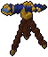
Cannocchiale delle stelle
Sblocca i talenti: il coraggio, i livelli e le costellazioni.
- Prezzo
- 10 promesse
- Zona
- la porta finestra
- Sulla lavagnetta
- da subito
I ricordi arredano la stanza della principessa e valgono a ogni discesa, tutti insieme. Si comprano sulla lavagnetta delle promesse, appesa sopra il leggio accanto alla porta della sua stanza. All'inizio non c'è: arriva dopo la prima discesa, comunque sia andata, in un regalo che trovi in mezzo alla stanza al risveglio. Per usarla guardala e premi E, poi tieni premuto E su un ricordo e le promesse che hai in tasca ci passano sopra una alla volta. Quelle scritte restano lì per sempre, anche se non arrivano ancora al prezzo: alla discesa dopo riprendi da dove eri rimasta. Quelle che tieni in tasca le porti giù per il negozio, e restano tue anche se muori (vedi Come si gioca). Quando le promesse bastano, il ricordo compare subito al suo posto nella stanza e vale già in quella discesa.
Su una lavagnetta nuova ci sono solo il Cannocchiale delle stelle, il Letto della principessa, il Tomo delle rune, lo Scudo di legno, il Modellino del castello e il Vecchio televisore. Il Modellino del castello è il primo della lavagnetta e costa poco; poi viene il Cannocchiale delle stelle: senza, i talenti non ci sono. Gli altri ricordi compaiono quando li sblocchi, e da quel momento restano nello slot:
Comprato un ricordo, sulla lavagnetta compare il suo grado II, e poi il III: costano di più e fanno di più (una promessa in più da ogni cavaliere, un incantesimo che torna prima, un dono di partenza in più fra cui scegliere…). Le promesse si scrivono allo stesso modo, e il grado nuovo vale subito. Sulla lavagnetta, a sinistra c'è l'elenco dei ricordi e a destra quello scelto: dei suoi gradi solo quelli già comprati, spuntati, e quello che puoi comprare adesso. Che ce ne siano altri la lavagnetta non lo dice: compaiono quando si aprono. Non tutti ne hanno tre: il Lettino dell'orsetto ne ha due, e il Letto della principessa, il Letto dei sette nani, il Salvadanaio di porcellana, il Carillon, la Tazza di camomilla, l'Elmo del cavaliere, gli Stivali delle sette leghe, il Portagioie, il Modellino del castello, il Cannocchiale delle stelle, il Tavolo magico, il Vecchio televisore e il Barattolo dei tesori uno solo. Anche gli scudi della rastrelliera hanno un grado solo: i loro gradi sono i tre scudi.
Ogni ricordo ha la sua zona della stanza, e in una zona ne vale uno alla volta: il Letto della principessa, il Lettino dell'orsetto e il Letto dei sette nani, per esempio, stanno tutti nella zona del letto: ogni zona ha da due a quattro ricordi tra cui scegliere, e lo spazio è quello. Il Cannocchiale delle stelle sta da solo, davanti alla porta finestra, e così il Modellino del castello, sul tavolo dei giochi della stanza degli altari: senza, sulla mappa gli oggetti non ci sono; con lui compaiono quelli che hai visto e non hai ancora raccolto. Il Vecchio televisore invece sta nella stanza degli altari: contro il muro da cui entri, dalla parte del tavolo dei giochi, e arriva con un divano e un tappeto. Guardalo e premi E per accenderlo. Su ogni canale c'è una delle tue discese, tutte, dalla più recente (LB e RB, o Pag su e Pag giù, saltano di dieci canali): il giorno, com'è finita e chi ti ha uccisa, il percorso piano per piano coi guardiani affrontati, il tempo, i nemici, i colpi presi, le promesse, il coraggio, l'incantesimo, i doni e il seed; sul canale 00 i tuoi record e chi ti ha uccisa più spesso. Le discese si registrano sempre, anche prima di comprarlo. Il Barattolo dei tesori, che arriva sulla lavagnetta dopo aver sconfitto il guardiano del sesto piano, ha una zona sua, lo sgabello alla destra del letto: finché non lo compri, le cianfrusaglie non escono mai, né nei vasi né al negozio. Se compri un ricordo per una zona già occupata prende il posto del vecchio, che resta tuo: E sulla zona per rimetterlo, anche all'inizio di una discesa. I ricordi che danno un oggetto (lo scudo, le chiavi) lo ridanno a ogni discesa.

Sblocca i talenti: il coraggio, i livelli e le costellazioni.
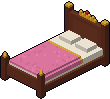
+1  massimo.
massimo.
I doni del dardo escono il 50% più spesso.
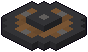
Parti con lo scudo di legno al braccio: para 1 colpo.
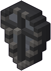
Parti con lo scudo di ferro al braccio: para 2 colpi.

Parti con lo scudo dorato al braccio: para 3 colpi.
Una carica in più dell'incantesimo.
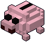
I nemici sconfitti lasciano una promessa il doppio delle volte.
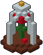
Una volta, morendo, ti rialzi.
(38 promesse) (50 promesse)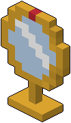
A ogni piano vedi subito la scala e la porta nera, e sul diario un piano in più fra quelli che vengono.
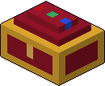
Parti con due chiavi dorate.
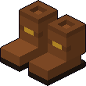
Incantesimo più forte (il balzo più lungo).
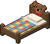
Scegli il dono di partenza fra quattro invece che fra tre.
Parti dal livello 2 di coraggio.
Ogni cavaliere accasciato ti lascia una promessa in più.
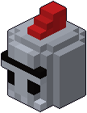
A ogni piano il primo colpo non ti ferisce.
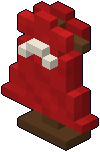
Dopo un incantesimo, per 0,4 secondi nessuno ti ferisce.
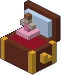
A ogni arena e a ogni boss, per i primi 5 secondi i dardi non costano mana.
A ogni piano nuovo recuperi 1 .
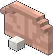
A ogni piano le stanze segrete compaiono sulla mappa.
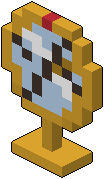
Niente mappa, ma le arene lasciano un dono più spesso.
Al negozio tutto costa una promessa in meno.
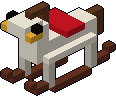
Corri più veloce.
Lo studio degli incantesimi, nella stanza degli altari: arriva quando torni dalla discesa, e si usa col tomo magico.
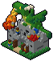
Sulla mappa vedi gli oggetti che non hai ancora raccolto.
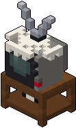
Rivedi tutte le tue discese, coi tuoi record: il percorso, i doni, chi ti ha uccisa.
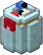
Nei vasi, nelle casse e al negozio trovi le cianfrusaglie: ninnoli da tasca, da usare una volta.